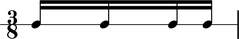

Multiplied duration
Abjad defines the multiplied duration of notes, rests, chords and skips equal to the product of written duration and leaf multiplier.
The first two notes here carry leaf mulitipliers equal to 2/1.
abjad> notes = Note(0, (1, 16)) * 4 abjad> notes[0].duration.multiplier = Rational(2, 1) abjad> notes[1].duration.multiplier = Rational(2, 1) abjad> measure = Measure((3, 8), notes) abjad> Beam(measure) abjad> staff = RhythmicStaff([measure]) abjad> note = measure[0] abjad> note.duration.written Rational(1, 16) abjad> show(staff)
abjad> note.duration.multiplier Rational(2, 1)
abjad> note.duration.written * note.duration.multiplier Rational(1, 8)
The written duration of these first two notes equals 1/16 and so the multiplied duration of these first two notes equals 1/16 * 2/1 = 1/8.
Abjad currently implements no explicit
duration.multipliedattribute. Would be easy to add such an attribute to the_LeafDurationInterface.Only leaves carry multiplied duration. Tuplets carry a multiplier but no multiplied duration. Should we rename tuplet multipliers to something else like tuplet ratios?
The chapter here defines multiplied duration equal to written * multiplier. We could define multiplied duration equal to written * multiplier * prolation instead. But let's not.
We have no leaf duration attribute equal to multiplier * prolation. This product shows what we might call the 'composite prolation' or 'total scaling' or 'gestalt scaling' directed towards the leaf in question. I don't think we've ever needed such an attribute. If we ever do it will be easy to add to
_LeafDurationInterfaceonce we come up with a one-word name for the attribute.